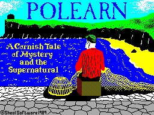
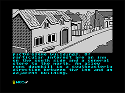

Polearn


{kind=link}

| Publisher: | Sheol Software |
| Price: | £7.95 |
| Year: | 1989 |
| Source: | CRASH, Issue 68 |

Cornwall isn’t all sun, sea and sticks of rock y’know. Well, it certainly isn’t in the village of Polearn where this text/graphlc adventure takes place. Pack your bags as you, Marcus Thornton, take a trip into an intriguing game of Cornish mystery and the supernatural.
Polearn is essentially an interactive ghost story, and the written text is excellent — convincing and occasionally disturbing. The manual sets out no objectives for the adventure, it just explains the events leading to Marcus’s arrival at Polearn. His wife died in a plane crash and, after seeing a vision of her in church, his trip to the village is really to recover from the shock.

However, as Marcus settles in, strange and inexplicable things occur. He hears sobbing, but there’s no-one there; there’s an accident at the mine-shaft for which there is no logical explanation; and then the mysterious fisherman... Before he realises it the village is in uproar, and he’s the only one to sort it out.
Nothing is obvious in the game, it just happens — like real life. You are lead into its events very subtly, not knowing what horrors await you until you realise you have turned Psychic Detective!
Written using PAW (Professional Adventure Writer, Gilsoft), the attention to detail and the program’s parser is excellent, the graphics fairly simple but atmospheric. And, surprisingly for a PAW game, you are offered a high level of interaction between Marcus and other villagers.
Polearn is a good traditional ghost-story adventures, and should not be confused with CRL’s many gothic horror schlockers. It’s fascinating, beautifully constructed and must rank as one of the best Spectrum adventures for ages.
Polearn will not be nationally released and distributed until other versions are complete. However, if you want to be one of the first to play Polearn, the game is available direct from Sheol Software themselves. Unfortunately, it’s a 128k game only, and the version reviewed here is for 128/plus 2. A two-part plus 3 disk-based version is under development, and it’s best to write to Sheol for full details.
RICHARD
RATING
Great interactive ghost story which is incredibly intriguing and addictive
| Presentation: | 85% |
| Graphics: | 71% |
| Sound: | N/A |
| Playability: | 94% |
| Addictivity: | 92% |
| Overall: | 91% |